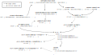

The Shadow Simulator
What is Shadow?
Shadow is a discrete-event network simulator that directly executes real application code, enabling you to simulate distributed systems with thousands of network-connected processes in realistic and scalable private network experiments using your laptop, desktop, or server running Linux.
Shadow experiments can be scientifically controlled and deterministically replicated, making it easier for you to reproduce bugs and eliminate confounding factors in your experiments.
How Does Shadow Work?
Shadow directly executes real applications:
- Shadow directly executes unmodified, real application code using native OS (Linux) processes.
- Shadow co-opts the native processes into a discrete-event simulation by interposing at the system call API.
- The necessary system calls are emulated such that the applications need not be aware that they are running in a Shadow simulation.
Shadow connects the applications in a simulated network:
- Shadow constructs a private, virtual network through which the managed processes can communicate.
- Shadow internally implements simulated versions of common network protocols (e.g., TCP and UDP).
- Shadow internally models network routing characteristics (e.g., path latency and packet loss) using a configurable network graph.
Why is Shadow Needed?
Network emulators (e.g., mininet) run real application code on top of real OS kernels in real time, but are non-determinsitic and have limited scalability: time distortion can occur if emulated processes exceed an unknown computational threshold, leading to undefined behavior.
Network simulators (e.g., ns-3) offer more experimental control and scalability, but have limited application-layer realism because they run application abstractions in place of real application code.
Shadow offers a novel, hybrid emulation/simulation architecture: it directly executes real applications as native OS processes in order to faithfully reproduce application-layer behavior while also co-opting the processes into a high-performance network simulation that can scale to large distributed systems with hundreds of thousands of processes.
Caveats
Shadow implements over 150 functions from the system call API, but does not
yet fully support all API features. Although applications that make basic use
of the supported system calls should work out of the box, those that use more
complex features or functions (e.g., fork()) may not yet function correctly
when running in Shadow. Extending support for the API is a work-in-progress.
That being said, we are particularly motivated to run large-scale Tor Network simulations. This use-case is already fairly well-supported and we are eager to continue extending support for it.
More Information
Homepage:
Documentation:
Community Support:
Bug Reports:
Shadow 2.x Design
TODO: This document should be expanded.
Overview
Shadow directly executes real applications using native OS processes and co-opts them into a high-performance discrete-event network simulation. Shadow enables realistic and scalable private network experiments that can be scientifically controlled and deterministically replicated.
Rationale
What about ns-3? ns-3 is a network simulator that is designed to replicate network-layer protocol behavior with very high fidelity. It contains accurate reimplementations of many network layer protocols and communication substrates, and is thus targeted primarily for use by researchers designing new network-layer protocols or protocol features. It does not (really) support running unmodified, real applications, leaving users to implement synthetic application abstraction models in place of real application code.
What about mininet? mininet is a network emulator that is designed to run real kernel, switch, and application code in real time. The real time requirement severely limits the number of processes that can be run in a mininet experiment: time distortion can occur if the processes exceed a computational threshold, which can result in undefined behavior and artifacts that lead to untrustworthy results.
Shadow aims to fill the gap between these tools. Like mininet, Shadow directly executes real applications in order to faithfully reproduce application behavior. But like ns-3, Shadow runs a discrete-event simulation in order to scientifically control and deterministically replicate network experiments. Shadow uniquely targets experiments with large-scale distributed systems and thus our simulator design prioritizes high-performance computing.
Non-goal: Security
Never run code under Shadow that you wouldn't trust enough to run outside of Shadow on the same system at the same level of privilege.
While Shadow uses some of the same techniques used by other systems to isolate potentially vulnerable or malicious software, this is not a design goal of Shadow. A managed program in a Shadow simulation can, if it tries to, detect that it's running under such a simulation and break out of the "sandbox" to issue native system calls.
For example:
- Shadow currently doesn't restrict access to the host file system. A malicious managed program can read and modify the same files that Shadow itself can.
- Shadow inserts some code via
LD_PRELOADinto managed processes. This code intentionally has the ability to make non-interposed system calls (which it uses to communicate with the Shadow process), and makes no effort to protect itself from the managed code running in the same process.
Supported Platforms
Officially supported platforms
- Ubuntu 18.04, 20.04, 22.04
- Debian 10 and 11
- Fedora 34, 35, 36
- CentOS Stream 8
We do not provide official support for other platforms. This means that we do not ensure that Shadow successfully builds and passes tests on other platforms. However, we will review pull requests that allow Shadow to build and run on unsupported platforms.
Docker
If you are installing Shadow within a Docker container, you must increase the
size of the container's /dev/shm mount and disable the seccomp security
profile. You can do this by passing --shm-size="1024g" --security-opt seccomp=unconfined to docker run.
Known incompatible platforms
- CentOS 7: We rely on features of glibc that aren't available on CentOS 7. Shadow won't compile there due to our use of C11 atomics, and threaded virtual processes running with preload-based interposition will deadlock due to an incompatible implementation of thread-local-storage.
If you are having difficulty installing Shadow on any supported platforms, you may find the continuous integration build steps helpful.
Installing Dependencies
Required:
- gcc, gcc-c++ (or clang, clang++)
- python (version >= 3.6)
- glib (version >= 2.32.0)
- cmake (version >= 3.2)
- make
- xz-utils
- lscpu
- cargo, rustc (version ~ latest)
Notice: Clang 13.0 is unsupported as it has a miscompilation bug that affects Shadow (see issue #1741).
Recommended Python Modules (for helper/analysis scripts):
- numpy, scipy, matplotlib, networkx, lxml, pyyaml
Recommended System Tools:
- git, dstat, htop, tmux
APT (Debian/Ubuntu):
# required dependencies
sudo apt-get install -y \
cmake \
findutils \
libc-dbg \
libglib2.0-0 \
libglib2.0-dev \
make \
python3 \
python3-pip \
xz-utils \
util-linux \
gcc \
g++
# rustup: https://rustup.rs
curl --proto '=https' --tlsv1.2 -sSf https://sh.rustup.rs | sh
# optional python modules
sudo apt-get install -y \
python3-numpy \
python3-lxml \
python3-matplotlib \
python3-networkx \
python3-scipy \
python3-yaml
# optional tools
sudo apt-get install -y \
dstat \
git \
htop \
tmux
YUM (Fedora/CentOS):
Warning: dnf often installs 32-bit (i686) versions of
libraries. You may want to use the --best option to make sure you're
installing the 64-bit (x86_64) versions, which are required by Shadow.
# required dependencies
sudo dnf install -y \
cmake \
findutils \
glib2 \
glib2-devel \
make \
python3 \
python3-pip \
xz \
xz-devel \
yum-utils \
diffutils \
util-linux \
gcc \
gcc-c++
# rustup: https://rustup.rs
curl --proto '=https' --tlsv1.2 -sSf https://sh.rustup.rs | sh
# optional python modules
sudo dnf install -y \
python3-numpy \
python3-lxml \
python3-matplotlib \
python3-networkx \
python3-scipy \
python3-yaml
# optional tools
sudo dnf install -y \
dstat \
git \
htop \
tmux
Shadow Setup
After building and testing Shadow, the install step is optional. If you do not
wish to install Shadow, you can run it directly from the build directory
(./build/src/main/shadow).
git clone https://github.com/shadow/shadow.git
cd shadow
./setup build --clean --test
./setup test
# Optionally install (to ~/.local/bin by default). Can otherwise run the binary
# directly at build/src/main/shadow.
./setup install
For the remainder of this documentation, we assume the Shadow binary is in your
PATH. The default installed location of /home/${USER}/.local/bin is
probably already in your PATH. If it isn't, you can add it by running:
echo 'export PATH="${PATH}:/home/${USER}/.local/bin"' >> ~/.bashrc && source ~/.bashrc
Check that Shadow is installed and runs:
shadow --version
shadow --help
Uninstall Shadow
After running ./setup install, you can find the list of installed files in
./build/install_manifest.txt. To uninstall Shadow, remove any files listed.
Setup Notes
-
All build output is generated to the
./builddirectory. -
Use
./setup build --helpto see all build options; some useful build options are:-gor--debugto build Shadow with debugging symbols and additional runtime checks. This option will significantly reduce the simulator performance.--includeand--libraryif you installed any dependencies in non-standard locations or somewhere other than~/.local.--prefixif you want to install Shadow somewhere besides~/.local.
-
The
setupscript is a wrapper tocmakeandmake. Usingcmakeandmakedirectly is also possible, but unsupported. For example:# alternative installation method rm -r build && mkdir build && cd build cmake -DCMAKE_INSTALL_PREFIX="~/.local" -DSHADOW_TEST=ON .. make ctest make install
System Configs and Limits
Some Linux system configuration changes are needed to run large-scale Shadow simulations (more than about 1000 processes).
Number of Open Files
There is a default Linux system limit on the total number of open files. Since
Shadow opens files from within its own process space and not from within the
managed processes, both the system limit and the per-process limit must be
greater than the combined total number of files opened by all managed
processes. If each managed process in your simulation opens many files, you'll
likely want to increase the limit so that your application doesn't receive
EMFILE errors when calling open().
System-wide Limits
Check the system-wide limits with:
sysctl fs.nr_open # per-process open file limit
sysctl fs.file-max # system-wide open file limit
Use cat /proc/sys/fs/file-nr to find:
- the current, system-wide number of used file handles
- the current, system-wide number of free file handles
- and the system-wide limit on the maximum number of open files for all processes
Change the limits, persistent across reboots, and apply now:
sudo sysctl -w fs.nr_open=10485760
echo "fs.nr_open = 10485760" | sudo tee -a /etc/sysctl.conf
sudo sysctl -w fs.file-max=10485760
echo "fs.file-max = 10485760" | sudo tee -a /etc/sysctl.conf
sudo sysctl -p
User Limits
Check the maximum number of open file descriptors currently allowed in your session:
ulimit -n
Check the number of files currently used in a process with pid=PID:
/bin/ls -l /proc/PID/fd/ | wc -l
You will want to almost certainly want to raise the user file limit by modifying
/etc/security/limits.conf. For example:
rjansen soft nofile 10485760
rjansen hard nofile 10485760
The max you can use is your fs.nr_open system-wide limit setting from above.
You need to either log out and back in or reboot for the changes to take affect.
You can watch /proc/sys/fs/file-nr and reduce the limit according to your
usage, if you'd like.
systemd Limits
systemd may place a limit on the number of tasks that a user can run in its slice. You can check to see if a limit is in place by running
$ systemctl status user-$UID.slice
Here's a listing of an example response:
● user-1027.slice - User Slice of <user>
Loaded: loaded
Transient: yes
Drop-In: /run/systemd/system/user-1027.slice.d
└─50-After-systemd-logind\x2eservice.conf, 50-After-systemd-user-sessions\x2eservice.conf, 50-Description.conf, 50-TasksMax.conf
Active: active since Wed 2020-05-06 21:20:08 EDT; 1 years 2 months ago
Tasks: 81 (limit: 12288)
The last line of the listing shows that this user has a task limit of 12288 tasks.
If this task limit is too small, it can be removed with the following command:
$ sudo systemctl set-property user-$UID.slice TasksMax=-1
Number of Maps
There is a system limit on the number of mmap() mappings per process. Most
users will not have to modify these settings. However, if an application running
in Shadow makes extensive use of mmap(), you may need to increase the limit.
Process Limit
The process limit can be queried in these ways:
sysctl vm.max_map_count
cat /proc/sys/vm/max_map_count
You can check the number of maps currently used in a process with pid=PID like this:
wc -l /proc/PID/maps
Set a new limit, make it persistent, apply it now:
sudo sysctl -w vm.max_map_count=1073741824
echo "vm.max_map_count = 1073741824" | sudo tee -a /etc/sysctl.conf
sudo sysctl -p
Process / Thread Count Limits
System-Wide Limits
The kernel may limit the max-pid value to a small value, which will limit the total number of possible processes running on the machine. This limit can be raised by the command
sudo sysctl -w kernel.pid_max=4194304
echo "kernel.pid_max = 4194304" | sudo tee -a /etc/sysctl.conf
sudo sysctl -p
The kernel may also limit the total number of threads running on the machine. This limit can be raised, too.
sudo sysctl -w kernel.threads-max=4194304
echo "kernel.threads-max = 4194304" | sudo tee -a /etc/sysctl.conf
sudo sysctl -p
The kernel may cap the kernel.threads-max value automatically so that, in the
maximum limit, the memory consumed by kernel thread control structures do not
consume more than approx. (1/8)th of system memory (see
https://stackoverflow.com/a/21926745).
User Limits
You may need to raise the maximum number of user processes allowed in
/etc/security/limits.conf. For example, user limits can be removed with the
lines:
rjansen soft nproc unlimited
rjansen hard nproc unlimited
For more information
https://www.kernel.org/doc/Documentation/sysctl/fs.txt
https://www.kernel.org/doc/Documentation/sysctl/vm.txt
man proc
man ulimit
cat /proc/sys/fs/file-max
cat /proc/sys/fs/inode-max
Running Shadow Overview
When installing Shadow, the main executable was placed in /bin in your install
prefix (~/.local/bin by default). As a reminder, it would be helpful if this
location was included in your environment PATH.
The main Shadow binary executable, shadow, contains most of the simulator's
code, including events and the event engine, the network stack, and the routing
logic. Shadow's event engine supports multi-threading using the -p or
--parallelism flags (or their corresponding configuration file
option) to simulate multiple hosts
in parallel.
Shadow can typically run applications without modification, but there are a few limitations to be aware of:
- Not all system calls are supported yet. Notable unsupported syscalls include fork and exec.
- Applications should not use or expect signals.
- Shadow does not support IPv6.
- Applications should not use busy-waiting, including the use of busy loops that rely on network events, events in other threads, or on the current time.
Basic File Transfer Example
Here we present a basic example that simulates the network traffic of an HTTP server with 3 clients, each running on different virtual hosts. If you do not have Python or cURL installed, you can download them through your distribution's package manager.
Configuring the Simulation
Each client uses cURL to make an HTTP request to a basic Python HTTP server.
Shadow requires a configuration file that specifies information about the network graph and the processes to run within the simulation. This example uses a built-in network graph for simplicity.
shadow.yaml:
general:
# stop after 10 simulated seconds
stop_time: 10s
# old versions of cURL use a busy loop, so to avoid spinning in this busy
# loop indefinitely, we add a system call latency to advance the simulated
# time when running non-blocking system calls
model_unblocked_syscall_latency: true
network:
graph:
# use a built-in network graph containing
# a single vertex with a bandwidth of 1 Gbit
type: 1_gbit_switch
hosts:
# a host with the hostname 'server'
server:
network_node_id: 0
processes:
- path: /usr/bin/python3
args: -m http.server 80
start_time: 3s
# three hosts with hostnames 'client1', 'client2', and 'client3'
client:
network_node_id: 0
quantity: 3
processes:
- path: /usr/bin/curl
args: -s server
start_time: 5s
Running the Simulation
Shadow stores simulation data to the shadow.data/ directory by default. We
first remove this directory if it already exists, and then run Shadow.
# delete any existing simulation data
rm -rf shadow.data/
shadow shadow.yaml > shadow.log
This small Shadow simulation should complete almost immediately.
Viewing the Simulation Output
Shadow will write simulation output to the data directory shadow.data/. Each
host has its own directory under shadow.data/hosts/. For example:
$ ls -l shadow.data/hosts/
drwxrwxr-x 2 user user 4096 Jun 2 16:54 client1
drwxrwxr-x 2 user user 4096 Jun 2 16:54 client2
drwxrwxr-x 2 user user 4096 Jun 2 16:54 client3
drwxrwxr-x 2 user user 4096 Jun 2 16:54 server
Each host directory contains the output for each process running on that host. For example:
$ ls -l shadow.data/hosts/client1/
-rw-rw-r-- 1 user user 1 Jun 2 16:54 client1.curl.1000.exitcode
-rw-rw-r-- 1 user user 0 Jun 2 16:54 client1.curl.1000.shimlog
-rw-r--r-- 1 user user 0 Jun 2 16:54 client1.curl.1000.stderr
-rw-r--r-- 1 user user 542 Jun 2 16:54 client1.curl.1000.stdout
$ cat shadow.data/hosts/client1/client1.curl.1000.stdout
<!DOCTYPE HTML PUBLIC "-//W3C//DTD HTML 4.01//EN" "http://www.w3.org/TR/html4/strict.dtd">
<html>
<head>
<meta http-equiv="Content-Type" content="text/html; charset=utf-8">
<title>Directory listing for /</title>
</head>
<body>
<h1>Directory listing for /</h1>
...
Traffic Generation Example
We recommend getting started with the basic file transfer before running this example. It contains some basics about running Shadow simulations that are not covered here.
During Shadow simulations, it is often useful to generate background traffic flows between your simulated hosts. This example uses the TGen traffic generator for this purpose.
TGen is capable of generating basic file transfers, where you can configure how much data is transferred in each direction, how long to wait in between each transfer, and how many transfers to perform. TGen also supports more complex behavior models: you can use Markov models to configure a state machine with precise inter-packet timing characteristics. We only make use of its basic features in this example.
If you don't have it installed, you can follow the instructions here. The following example runs TGen with 10 clients that each download 10 files from a server over a simple network graph.
A Shadow Simulation using TGen
The following examples simulates a network with 1 TGen server and 10 TGen clients that are generating TCP traffic to and from the server.
Configuring Shadow
The shadow.yaml file instructs Shadow how to model the network that is used to
carry the traffic between the hosts, and about the bandwidth available to each
of the hosts. It also specifies how many processes to run in the simulation, and
the configuration options for those applications.
shadow.yaml:
general:
stop_time: 10m
network:
graph:
# a custom single-node graph
type: gml
inline: |
graph [
node [
id 0
host_bandwidth_down "140 Mbit"
host_bandwidth_up "18 Mbit"
]
edge [
source 0
target 0
latency "50 ms"
packet_loss 0.01
]
]
hosts:
server:
network_node_id: 0
processes:
- path: ~/.local/bin/tgen
args: ../../../tgen.server.graphml.xml
start_time: 1s
client:
network_node_id: 0
quantity: 10
processes:
- path: ~/.local/bin/tgen
args: ../../../tgen.client.graphml.xml
start_time: 2s
We can see that Shadow will be running 11 processes in total, and that those
processes are configured using graphml.xml files (the configuration file
format for TGen) as arguments.
Each host directory is also the working
directory for the host's
processes, which is why we specified ../../../tgen.server.graphml.xml as the
path to the TGen configuration in our Shadow configuration file
(./shadow.data/hosts/server/../../../tgen.server.graphml.xml →
./tgen.server.graphml.xml).
Configuring TGen
Each TGen process requires an action-dependency graph in order to configure the behavior of the clients and server. See the TGen documentation for more information about customizing TGen behaviors.
Our TGen Server
The main configuration here is the port number on which the server will listen.
tgen.server.graphml.xml:
<?xml version="1.0" encoding="utf-8"?><graphml xmlns="http://graphml.graphdrawing.org/xmlns" xmlns:xsi="http://www.w3.org/2001/XMLSchema-instance" xsi:schemaLocation="http://graphml.graphdrawing.org/xmlns http://graphml.graphdrawing.org/xmlns/1.0/graphml.xsd">
<key attr.name="serverport" attr.type="string" for="node" id="d1" />
<key attr.name="loglevel" attr.type="string" for="node" id="d0" />
<graph edgedefault="directed">
<node id="start">
<data key="d0">info</data>
<data key="d1">8888</data>
</node>
</graph>
</graphml>
Our TGen Clients
The client config specifies that we connect to the server using its name and
port server:8888, and that we download and upload 1 MiB 10 times, pausing 1,
2, or 3 seconds between each transfer.
tgen.client.graphml.xml:
<?xml version="1.0" encoding="utf-8"?><graphml xmlns="http://graphml.graphdrawing.org/xmlns" xmlns:xsi="http://www.w3.org/2001/XMLSchema-instance" xsi:schemaLocation="http://graphml.graphdrawing.org/xmlns http://graphml.graphdrawing.org/xmlns/1.0/graphml.xsd">
<key attr.name="recvsize" attr.type="string" for="node" id="d5" />
<key attr.name="sendsize" attr.type="string" for="node" id="d4" />
<key attr.name="count" attr.type="string" for="node" id="d3" />
<key attr.name="time" attr.type="string" for="node" id="d2" />
<key attr.name="peers" attr.type="string" for="node" id="d1" />
<key attr.name="loglevel" attr.type="string" for="node" id="d0" />
<graph edgedefault="directed">
<node id="start">
<data key="d0">info</data>
<data key="d1">server:8888</data>
</node>
<node id="pause">
<data key="d2">1,2,3</data>
</node>
<node id="end">
<data key="d3">10</data>
</node>
<node id="stream">
<data key="d4">1 MiB</data>
<data key="d5">1 MiB</data>
</node>
<edge source="start" target="stream" />
<edge source="pause" target="start" />
<edge source="end" target="pause" />
<edge source="stream" target="end" />
</graph>
</graphml>
Running the Simulation
With the above three files saved in the same directory, you can start a
simulation. Shadow stores simulation data to the shadow.data/ directory by
default. We first remove this directory if it already exists, and then run
Shadow. This example may take a few minutes.
# delete any existing simulation data
rm -rf shadow.data/
shadow shadow.yaml > shadow.log
Simulation Output
Shadow will write simulation output to the data directory shadow.data/. Each
host has its own directory under shadow.data/hosts/.
In the TGen process output, lines containing stream-success represent
completed downloads and contain useful timing statistics. From these lines we
should see that clients have completed a total of 100 streams:
for d in shadow.data/hosts/client*; do grep "stream-success" ${d}/*.stdout ; done | wc -l
We can also look at the transfers from the servers' perspective:
for d in shadow.data/hosts/server*; do grep "stream-success" ${d}/*.stdout ; done | wc -l
You can also parse the TGen output logged to the stdout files using the
tgentools program from the TGen repo, and plot the data in graphical format to
visualize the performance characteristics of the transfers. This
page describes how
to get started.
Simple Tor Network Example
We recommend getting started with the basic file transfer and traffic generation examples to orient yourself with Shadow before running this slightly more complex Tor simulation.
This example requires that you have installed (or linked) a Tor executable in
~/.local/bin/tor (see the Tor install
README). You also need to
install (or link) a TGen executable in ~/.local/bin/tgen (see the TGen
installation guide).
Once Shadow, Tor, and TGen are installed, you can quickly get started running a very simple Tor network:
cd shadow/src/test/tor/minimal
./run.sh
./verify.sh
The run.sh script launches Shadow with a
config that runs a minimal Tor network. The verify.sh
script checks that all Tor processes
bootstrapped correctly and that all TGen file transfer attempts succeeded. Note
that these steps can also be launched as a test case using ./setup test -- --build-config extra --label tor.
After the experiment, have a look in the shadow.data/host/* directories to
inspect the individual log files from the Tor relays and TGen clients.
You can use the tornettools toolkit to run larger, more complex Tor networks that are meant to more accurately resemble the characteristics and state of the public Tor network.
Determinism
To improve determinism for your simulation, Shadow preloads an auxiliary library, libshadow_openssl_rng, which override's some of openssl's RNG routines. This is enabled by default, but can be controlled using the experimental use_openssl_rng_preload option.
Shadow Configuration Overview
Shadow requires a configuration file that provides a network graph and information about the processes to run during the simulation. This configuration file uses the YAML format. The options and their effect on the simulation are described in more detail (alongside a simple example configuration file) on the configuration options page.
Many of the configuration file options can also be overridden using command-line
options. For example, the configuration option
general.stop_time can be
overridden with shadow's --stop-time option, and
general.log_level can be
overridden with --log-level. See shadow --help for other command-line
options.
Quantities with Units
Some options such as
hosts.<hostname>.bandwidth_down
accept quantity values containing a magnitude and a unit. For example bandwidth
values can be expressed as 1 Mbit, 1000 Kbit, 977 Kibit, etc. The space
between the magnitude and unit is optional (for example 5Mbit), and the unit
can be pluralized (for example 5 Mbits). Units are case-sensitive.
Time
Time values are expressed as either sub-second units, seconds, minutes, or
hours. Not all options will accept sub-second units. For example
general.stop_time must be
expressed in units of seconds or larger.
Acceptable units are:
- nanosecond / ns
- microsecond / us / μs
- millisecond / ms
- second / sec / s
- minute / min / m
- hour / hr / h
Examples: 30 s, 2 hr, 10 minutes, 100 ms
Bandwidth
Bandwidth values are expressed in bits-per-second with the unit bit. All
bandwidth values should be divisible by 8 bits-per-second (for example 30 bit
is invalid, but 30 Kbit is valid).
Acceptable unit prefixes are:
- kilo / K
- kibi / Ki
- mega / M
- mebi / Mi
- giga / G
- gibi / Gi
- tera / T
- tebi / Ti
Examples: 100 Mbit, 100 Mbits, 10 kilobits, 128 bits
Byte Sizes
Byte size values are expressed with the unit byte or B.
Acceptable unit prefixes are:
- kilo / K
- kibi / Ki
- mega / M
- mebi / Mi
- giga / G
- gibi / Gi
- tera / T
- tebi / Ti
Examples: 20 B, 100 MB, 100 megabyte, 10 kibibytes, 30 MiB, 1024 Mbytes
Shadow Configuration Specification
Shadow uses the standard YAML format to accept configuration options from users. The following describes Shadow's YAML format and all of the options that Shadow supports that can be used to customize a simulation.
Example:
general:
stop_time: 2 min
network:
graph:
type: gml
inline: |
graph [
node [
id 0
host_bandwidth_down "140 Mbit"
host_bandwidth_up "18 Mbit"
]
edge [
source 0
target 0
latency "50 ms"
packet_loss 0.01
]
]
hosts:
server:
network_node_id: 0
processes:
- path: /usr/sbin/nginx
args: -c ../../../nginx.conf -p .
start_time: 1
client:
network_node_id: 0
quantity: 20
options:
log_level: debug
processes:
- path: /usr/bin/curl
args: server --silent
start_time: 5
Contents:
generalgeneral.bootstrap_end_timegeneral.data_directorygeneral.heartbeat_intervalgeneral.log_levelgeneral.model_unblocked_syscall_latencygeneral.parallelismgeneral.progressgeneral.seedgeneral.stop_timegeneral.template_directorynetworknetwork.graphnetwork.graph.typenetwork.graph.<file|inline>network.graph.file.pathnetwork.graph.file.compressionnetwork.use_shortest_pathexperimentalexperimental.host_heartbeat_intervalexperimental.host_heartbeat_log_infoexperimental.host_heartbeat_log_levelexperimental.interface_bufferexperimental.interface_qdiscexperimental.interpose_methodexperimental.max_unapplied_cpu_latencyexperimental.preload_spin_maxexperimental.runaheadexperimental.scheduler_policyexperimental.socket_recv_autotuneexperimental.socket_recv_bufferexperimental.socket_send_autotuneexperimental.socket_send_bufferexperimental.strace_logging_modeexperimental.unblocked_syscall_latencyexperimental.unblocked_vdso_latencyexperimental.use_cpu_pinningexperimental.use_dynamic_runaheadexperimental.use_explicit_block_messageexperimental.use_legacy_working_direxperimental.use_libc_preloadexperimental.use_memory_managerexperimental.use_o_n_waitpid_workaroundsexperimental.use_object_countersexperimental.use_preload_openssl_cryptoexperimental.use_preload_openssl_rngexperimental.use_sched_fifoexperimental.use_shim_syscall_handlerexperimental.use_seccompexperimental.use_syscall_countersexperimental.worker_threadshost_defaultshost_defaults.log_levelhost_defaults.pcap_capture_sizehost_defaults.pcap_directoryhostshosts.<hostname>.bandwidth_downhosts.<hostname>.bandwidth_uphosts.<hostname>.ip_addrhosts.<hostname>.network_node_idhosts.<hostname>.optionshosts.<hostname>.quantityhosts.<hostname>.processeshosts.<hostname>.processes[*].argshosts.<hostname>.processes[*].environmenthosts.<hostname>.processes[*].pathhosts.<hostname>.processes[*].quantityhosts.<hostname>.processes[*].start_timehosts.<hostname>.processes[*].stop_time
general
Required
General experiment settings.
general.bootstrap_end_time
Default: "0 sec"
Type: String OR Integer
The simulated time that ends Shadow's high network bandwidth/reliability bootstrap period.
If the bootstrap end time is greater than 0, Shadow uses a simulation bootstrapping period where hosts have unrestricted network bandwidth and no packet drop. This can help to bootstrap large networks quickly when the network hosts have low network bandwidth or low network reliability.
general.data_directory
Default: "shadow.data"
Type: String
Path to store simulation output.
general.heartbeat_interval
Default: "1 sec"
Type: String OR Integer OR null
Interval at which to print heartbeat messages.
general.log_level
Default: "info"
Type: "error" OR "warning" OR "info" OR "debug" OR "trace"
Log level of output written on stdout. If Shadow was built in release mode, then messages at level 'trace' will always be dropped.
general.model_unblocked_syscall_latency
Default: false
Type: Bool
Whether to model syscalls and VDSO functions that don't block as having some latency. This should have minimal effect on typical simulations, but can be helpful for programs with "busy loops" that otherwise deadlock under Shadow.
general.parallelism
Default: 1
Type: Integer
How many parallel threads to use to run the simulation. Optimal performance is
usually obtained with nproc, or sometimes nproc/2 with hyperthreading.
Virtual hosts depend on network packets that can potentially arrive from other virtual hosts, so each worker can only advance according to the propagation delay to avoid dependency violations. Therefore, not all threads will have 100% CPU utilization.
general.progress
Default: false
Type: Bool
Show the simulation progress on stderr.
When running in a tty, the progress will be updated every second and shown at the bottom of the terminal. Otherwise the progress will be printed without ANSI escape codes at intervals which increase as the simulation progresses.
general.seed
Default: 1
Type: Integer
Initialize randomness using seed N.
general.stop_time
Required
Type: String OR Integer
The simulated time at which simulated processes are sent a SIGKILL signal.
general.template_directory
Default: null
Type: String OR null
Path to recursively copy during startup and use as the data-directory.
network
Required
Network settings.
network.graph
Required
The network topology graph.
A network topology represented by a connected graph with certain attributes specified on the network nodes and edges. For more information on how to structure this data, see the Network Graph Overview.
Example:
network:
graph:
type: gml
inline: |
graph [
...
]
network.graph.type
Required
Type: "gml" OR "1_gbit_switch"
The network graph can be specified in the GML format, or a built-in "1_gbit_switch" graph with a single network node can be used instead.
The built-in "1_gbit_switch" graph contains the following:
graph [
directed 0
node [
id 0
host_bandwidth_up "1 Gbit"
host_bandwidth_down "1 Gbit"
]
edge [
source 0
target 0
latency "1 ms"
packet_loss 0.0
]
]
network.graph.<file|inline>
Required if network.graph.type is "gml"
Type: Object OR String
If the network graph type is not a built-in network graph, the graph data can be specified as a path to an external file, or as an inline string.
network.graph.file.path
Required
Type: String
The path to the file.
If the path begins with ~/, it will be considered relative to the current
user's home directory.
network.graph.file.compression
Default: null
Type: "xz" OR null
The file's compression format.
network.use_shortest_path
Default: true
Type: Bool
When routing packets, follow the shortest path rather than following a direct edge between network nodes. If false, the network graph is required to be complete (including self-loops) and to have exactly one edge between any two nodes.
experimental
Experimental experiment settings. Unstable and may change or be removed at any time, regardless of Shadow version.
experimental.host_heartbeat_interval
Default: null
Type: String OR Integer OR null
Amount of time between heartbeat messages for this host.
experimental.host_heartbeat_log_info
Default: ["node"]
Type: Array of ("node" OR "socket" OR "ram")
List of information to show in the host's heartbeat message.
experimental.host_heartbeat_log_level
Default: "info"
Type: "error" OR "warning" OR "info" OR "debug" OR "trace"
Log level at which to print host statistics.
experimental.interface_buffer
Default: "1024000 B"
Type: String OR Integer
Size of the interface receive buffer that accepts incoming packets.
experimental.interface_qdisc
Default: "fifo"
Type: "fifo" OR "roundrobin"
The queueing discipline to use at the network interface.
experimental.interpose_method
Default: "preload"
Type: "ptrace" OR "preload"
Which interposition method to use.
experimental.max_unapplied_cpu_latency
Default: "1 microsecond"
Type: String
Max amount of execution-time latency allowed to accumulate before the clock is moved forward. Moving the clock forward is a potentially expensive operation, so larger values reduce simulation overhead, at the cost of coarser time jumps.
Note also that accumulated-but-unapplied latency is discarded when a thread is blocked on a syscall.
Ignored when
general.model_unblocked_syscall_latency
is false.
experimental.preload_spin_max
Default: 0
Type: Integer
Max number of iterations to busy-wait on IPC semaphore before blocking.
experimental.runahead
Default: "1 ms"
Type: String OR null
If set, overrides the automatically calculated minimum time workers may run ahead when sending events between virtual hosts.
experimental.scheduler_policy
Default: "host"
Type: "host" OR "steal" OR "thread" OR "threadxthread" OR "threadxhost"
The event scheduler's policy for thread synchronization.
experimental.socket_recv_autotune
Default: true
Type: Bool
Enable receive window autotuning.
experimental.socket_recv_buffer
Default: "174760 B"
Type: String OR Integer
Initial size of the socket's receive buffer.
experimental.socket_send_autotune
Default: true
Type: Bool
Enable send window autotuning.
experimental.socket_send_buffer
Default: "131072 B"
Type: String OR Integer
Initial size of the socket's send buffer.
experimental.strace_logging_mode
Default: "off"
Type: "off" OR "standard" OR "deterministic"
Log the syscalls for each process to individual "strace" files.
The mode determines the format that the syscalls are logged in. For example, the "deterministic" mode will avoid logging memory addresses or potentially uninitialized memory.
The logs will be stored at
shadow.data/hosts/<hostname>/<hostname>.<procname>.<pid>.strace.
Limitations:
- Syscalls handled within Shadow's preloaded "shim" library will not be logged
(for example
SYS_gettimeofday). - Syscalls run natively will not log the syscall arguments or return value (for
example
SYS_getcwd). - Syscalls processed within Shadow's C code will not log the syscall arguments.
- Syscalls that are interrupted by a signal may not be logged (for example
SYS_read). - Syscalls that are interrupted by a signal may be logged inaccurately. For
example, the log may show
syscall(...) = -1 (EINTR), but the managed process may not actually see this return value. Instead the syscall may be restarted.
experimental.unblocked_syscall_latency
Default: "1 microseconds"
Type: String
The simulated latency of an unblocked syscall. For simulation efficiency, this
latency is only added when max_unapplied_cpu_latency is reached.
Ignored when
general.model_unblocked_syscall_latency
is false.
experimental.unblocked_vdso_latency
Default: "10 nanoseconds"
Type: String
The simulated latency of an unblocked vdso function. For simulation efficiency, this
latency is only added when max_unapplied_cpu_latency is reached.
Ignored when
general.model_unblocked_syscall_latency
is false.
experimental.use_cpu_pinning
Default: true
Type: Bool
Pin each thread and any processes it executes to the same logical CPU Core to improve cache affinity.
experimental.use_dynamic_runahead
Default: false
Type: Bool
Update the minimum runahead dynamically throughout the simulation.
experimental.use_explicit_block_message
Default: false
Type: Bool
Send message to managed process telling it to stop spinning when a syscall blocks.
experimental.use_legacy_working_dir
Default: false
Type: Bool
Don't adjust the working directories of the virtual processes.
experimental.use_libc_preload
Default: true
Type: Bool
Preload our libc library for all managed processes for fast syscall interposition when possible.
experimental.use_memory_manager
Default: true
Type: Bool
Use the MemoryManager. It can be useful to disable for debugging, but will hurt performance in most cases.
experimental.use_o_n_waitpid_workarounds
Default: false
Type: Bool
Use performance workarounds for waitpid being O(n). Beneficial to disable if waitpid is patched to be O(1), if using one logical processor per host, or in some cases where it'd otherwise result in excessive detaching and reattaching.
experimental.use_object_counters
Default: true
Type: Bool
Count object allocations and deallocations. If disabled, we will not be able to detect object memory leaks.
experimental.use_preload_openssl_crypto
Default: false
Type: Bool
Preload our OpenSSL crypto library for all managed processes to skip some AES crypto operations, which may speed up simulation if your CPU lacks AES-NI support. However, it changes the behavior of your application and can cause bugs in OpenSSL that are hard to notice. You should probably not use this option unless you really know what you're doing.
experimental.use_preload_openssl_rng
Default: true
Type: Bool
Preload our OpenSSL RNG library for all managed processes to mitigate non-deterministic use of OpenSSL.
experimental.use_sched_fifo
Default: false
Type: Bool
Use the SCHED_FIFO scheduler. Requires CAP_SYS_NICE. See sched(7),
capabilities(7).
experimental.use_shim_syscall_handler
Default: true
Type: Bool
Use shim-side syscall handler to force hot-path syscalls to be handled via an inter-process syscall with Shadow.
experimental.use_seccomp
Default: true iff experimental.interpose_method == preload.
Type: Bool
Use seccomp to trap syscalls.
experimental.use_syscall_counters
Default: false
Type: Bool
Count the number of occurrences for individual syscalls.
experimental.worker_threads
Default: # of hosts in the simulation
Type: Integer
Create N worker threads. Note though, that general.parallelism of them will be
allowed to run simultaneously. If unset, will create a thread for each simulated
Host. This is to work around limitations in ptrace, and may change in the
future.
host_defaults
Default options for all hosts. These options can also be overridden for each
host individually in the host's hosts.<hostname>.options
section.
host_defaults.log_level
Default: null
Type: "error" OR "warning" OR "info" OR "debug" OR "trace" OR null
Log level at which to print host log messages.
host_defaults.pcap_capture_size
Default: "65535 B"
Type: String OR Integer
How much data to capture per packet (header and payload) if pcap logging is enabled.
The default of 65535 bytes is the maximum length of an IP packet.
host_defaults.pcap_directory
Default: null
Type: String OR null
Where to save the pcap files (relative to the host directory).
Logs all network input and output for this host in PCAP format (for viewing in
e.g. wireshark). The directory must already exist and be relative to the host
directory, although absolute paths are also allowed. Example:
pcap_directory: '.' will generate pcap files such as
shadow.data/hosts/myhost/myhost-11.0.0.1.pcap.
hosts
Required
Type: Object
The simulated hosts which execute processes. Each field corresponds to a host configuration, with the field name being used as the network hostname.
Shadow assigns each host to a network node in the network graph.
In Shadow, each host is given an RNG whose seed is derived from the global seed
(general.seed) and the hostname. This means that changing a
host's name will change that host's RNG seed, subtly affecting the simulation
results.
hosts.<hostname>.bandwidth_down
Default: null
Type: String OR Integer OR null
Downstream bandwidth capacity of the host.
Overrides any default bandwidth values set in the assigned network graph node.
hosts.<hostname>.bandwidth_up
Default: null
Type: String OR Integer OR null
Upstream bandwidth capacity of the host.
Overrides any default bandwidth values set in the assigned network graph node.
hosts.<hostname>.ip_addr
Default: null
Type: String OR null
IP address to assign to the host.
This IP address must not conflict with the address of any other host (two hosts
must not have the same IP address). If this option is set,
hosts.<hostname>.quantity must be set to 1.
hosts.<hostname>.network_node_id
Required
Type: Integer
Network graph node ID to assign the host to.
hosts.<hostname>.options
See host_defaults for supported fields.
Example:
hosts:
client:
...
options:
log_level: debug
hosts.<hostname>.quantity
Default: 1
Type: Integer
Number of hosts to start.
If quantity is greater than 1, each host's hostname will be suffixed with a
counter. For example, a host with an id of host and quantity of 2 would
produce hosts with hostnames host1 and host2.
hosts.<hostname>.processes
Required
Type: Array
Virtual software processes that the host will run. PIDs are assigned from 1000
on each host, in the order that they appear in this process list. e.g. this
property can be used to cleanly shut down a process by scheduling a /bin/kill
process to send a shutdown signal (e.g. SIGTERM or SIGINT) at the desired time.
hosts.<hostname>.processes[*].args
Default: ""
Type: String OR Array of String
Process arguments.
The arguments can be specified as a string in a shell command-line format:
args: "--user-agent 'Mozilla/5.0 (compatible; ...)' http://myserver:8080"
Or as an array of strings:
args: ['--user-agent', 'Mozilla/5.0 (compatible; ...)', 'http://myserver:8080']
hosts.<hostname>.processes[*].environment
Default: ""
Type: String
Environment variables passed when executing this process. Multiple variables can
be specified by using a semicolon separator (ex: ENV_A=1;ENV_B=2).
hosts.<hostname>.processes[*].path
Required
Type: String
If the path begins with ~/, it will be considered relative to the current
user's home directory.
hosts.<hostname>.processes[*].quantity
Default: 1
Type: Integer
The number of replicas of this process to execute.
hosts.<hostname>.processes[*].start_time
Default: "0 sec"
Type: String OR Integer
The simulated time at which to execute the process.
hosts.<hostname>.processes[*].stop_time
Default: null
Type: String OR Integer OR null
The simulated time at which to send a SIGKILL signal to the process.
Network Graph Overview
Processes running in Shadow do not have access to the internet; instead, processes running on Shadow virtual hosts utilize an internal routing module to communicate with other processes running on other virtual hosts in the simulation. The routing module is used to position virtual hosts within a network topology, to compute communication paths between virtual hosts, and to enforce network path characteristics like latency and packet loss.
Importantly, the routing module is currently used to model the performance characteristics of internet paths; we do not simulate the behavior of network routers (we do not run routing protocols like BGP).
This page describes the routing module and how it can be configured.
Graph
Shadow represents a network topology over which processes can communicate using a weighted graph. The graph contains vertices that abstractly represent network locations, and edges representing network paths between those locations.
When referring to a network graph, the terms vertices and nodes are interchangeable. In our documentation, we refer to these as nodes. Note that nodes in the network graph are distinct from virtual hosts in the Shadow config file: a virtual host models an end-host machine, whereas a network node represents a location at which a host can connect to the simulated network.
Shadow requires that the network graph is connected such that there exists at least one path (a series of one or more edges) between every pair of nodes.
Behavior
The graph encodes network positioning and path characteristics as attributes on the nodes and edges. Shadow uses the connectivity graph along with the information encoded in node and edge attributes to:
- attach virtual hosts to specific nodes (i.e., locations) in the network graph;
- assign the bandwidth allowed for each attached virtual host;
- compute the shortest path (weighted by edge
latency) between two virtual hosts using Dijkstra's algorithm; and - compute the end-to-end latency and packet loss for the shortest path.
The bandwidth of the virtual hosts and the end-to-end latency and packet loss for a shortest path between two virtual hosts are then enforced for all network communication.
Important Notes
- The network graph may be directed or undirected, as long as the graph is structured such that every node can reach every other node through a series of edges.
- If the network graph is a complete
graph (there exists a single
unique edge between every pair of nodes), then we can avoid running the
shortest path algorithm as a performance optimization by setting the
use_shortest_path
option to
False. - Each node in the graph must have a self-loop (an edge from the node to itself). This edge will be used for communication between two hosts attached to the same node, regardless of if a shorter path exists.
Network Graph Attributes
We encode attributes on the nodes and edges that allow for configuring the simulated network characteristics. The attributes and their effect on the simulated network are described in more detail (alongside a simple example graph) on the network graph specification page.
Using an Existing Graph
We created a large network graph representing worldwide latencies and bandwidths as of 2018 using the RIPE Atlas measurement platform. The graph contains network bandwidths and latencies in and between major cities around the world, and is suitable for general usage for most types of Shadow simualtions. The graph is available for download as a research artifact and more details about the measurement methodology is available on the research artifacts site.
Note: the scripts we used to create the graph are also available, but are not recommended for general use. The scripts require advanced knowledge of RIPE Atlas and also require that you possess RIPE Atlas credits to conduct the measurements needed to create a new graph. We recommend using our existing graph linked above instead, which we may periodically update.
Creating Your Own Graph
The python module networkx can be used to create and manipulate more complicated graphs.
Network Graph Specification
The network graph overview provides a general summary of Shadow's use of a network graph to abstractly model network position and to connect virtual hosts in a network topology while enforcing network characteristics on paths between hosts. This page describes the specific attributes that can be configured in the network graph, and the effect that each attribute has on the simulation.
Example Graph
Below is an example of a simple network graph in the Shadow-supported GML format (note that GML calls graph vertices as nodes, but these terms are generally interchangeable).
graph [
directed 0
node [
id 0
label "node at 1.2.3.4"
host_bandwidth_down "100 Mbit"
host_bandwidth_up "100 Mbit"
]
edge [
source 0
target 0
label "path from 1.2.3.4 to 1.2.3.4"
latency "10 ms"
jitter "0 ms"
packet_loss 0.0
]
]
Configurable Attributes
graph.directednode.idnode.labelnode.host_bandwidth_downnode.host_bandwidth_upedge.sourceedge.targetedge.labeledge.latencyedge.jitteredge.packet_loss
graph.directed
Required: False
Default: 0
Type: Integer
Specifies the symmetry of the edges in the graph. If set to 0 (the default),
the graph is an undirected
graph: an edge
between node u and node v is symmetric and can be used to construct a
path both from u to v and from v to u. If set to 1, the graph is a
directed graph: an edge from
node u to node v is assymmetric and can only be used to construct a path
from u to v (a separate edge from v to u must be specified to compose a
path in the reverse direction).
node.id
Required: True
Type: Integer
A unique integer identifier for a given node.
node.label
Required: False
Default: n/a
Type: String
An optional, human-meaningful string description of the node. The string may be used in log messages printed by Shadow.
node.host_bandwidth_down
Required: True
Type: String
A string defining the downstream (receive) bandwidth that will be allowed for
any host attached to this node. Hosts may individually override this value in
the Shadow config file.
The format of the string specifies the bandwidth and its unit as described in
the config documentation, e.g., 10 Mbit. Note that
this bandwidth is allowed for every host that is attached to this node; it is
not the total bandwidth logically available at the node (which is not
defined).
node.host_bandwidth_up
Required: True
Type: String
A string defining the upstream (send) bandwidth that will be allowed for any
host attached to this node. Hosts may individually override this value in the
Shadow config file. The
format of the string specifies the bandwidth and its unit as described in the
config documentation, e.g., 10 Mbit. Note that
this bandwidth is allowed for every host that is attached to this node; it is
not the total bandwidth logically available at the node (which is not
defined).
edge.source
Required: True
Type: Integer
The unique integer identifier of the first of two nodes of the edge. The node must exist in the graph. If the graph is directed, this node is treated as the source or start of the edge.
edge.target
Required: True
Type: Integer
The unique integer identifier of the second of two nodes of the edge. The node must exist in the graph. If the graph is directed, this node is treated as the target or end of the edge.
edge.label
Required: False
Default: n/a
Type: String
An optional, human-meaningful string description of the edge. The string may be used in log messages printed by Shadow.
edge.latency
Required: True
Type: String
The latency that will be added to packets traversing this edge. This value is
used as a weight while running Dijkstra's shortest path algorithm. The format of
the string specifies the latency and its unit, e.g., 10 ms. If a unit is not
specified, it will be assumed that it is in the base unit of "seconds". The
latency must not be 0.
edge.jitter
Required: False
Default: n/a
Type: String
This keyword is allowed but currently nonfunctional; it is reserved for future use.
edge.packet_loss
Required: True
Type: Float
A fractional value between 0 and 1 representing the chance that a packet traversing this edge will get dropped.
Format of Shadow Log Messages
| ❗ Warning |
|---|
| The format of the log messages is not stable and may change at any time. |
Log Line Prefix
Shadow produces simulator log messages in the following format:
real-time [thread-id:thread-name] virtual-time [loglevel] [hostname:ip] [src-file:line-number] [function-name] MESSAGE
real-time:
the wall clock time since the start of the experiment, represented ashours:minutes:secondsthread-id:
the thread id (as returned bygettid) of the system thread that generated the message.thread-name:
the name of the system thread that generated the messagevirtual-time:
the simulated time since the start of the experiment, represented ashours:minutes:secondsloglevel:
one ofERROR<WARN<INFO<DEBUG<TRACE, in that orderhostname:
the name of the host as specified inhosts.<hostname>of the simulation configip:
the IP address of the host as specified inhosts.<hostname>.ip_address_hintof the simulation config, or a random IP address if one is not specifiedsrc-file:
the name of the source code file where the message is loggedline-number:
the line number in the source code file where the message is loggedfunction-name:
the name of the function logging the messageMESSAGE:
the actual message to be logged
By default, Shadow only prints core messages at or below the info log
level. This behavior can be changed
using the Shadow option -l or --log-level to increase or decrease the
verbosity of the output. As mentioned in the example from the previous section,
the output from each application process is stored in separate log files beneath
the shadow.data directory, and the format of those log files is
application-specific (i.e., Shadow writes application output directly to
file).
Heartbeat Messages
Shadow logs simulator heartbeat messages that contain useful system information
for each virtual node in the experiment, in messages containing the string
shadow-heartbeat. By default, these heartbeats are logged once per second, but
the frequency can be changed using the --heartbeat-frequency option to Shadow
(see shadow --help).
There are currently three heartbeat statistic
subsystems: node,
socket, and ram. For each subsystem that is enabled, Shadow will print a
'header' message followed by regular message every frequency interval. The
'header' messages generally describe the statistics that are printed in the
regular messages for that subsystem.
The following are examples of the statistics that are available for each subsystem:
Node:
[node-header] interval-seconds,recv-bytes,send-bytes,cpu-percent,delayed-count,avgdelay-milliseconds;inbound-localhost-counters;outbound-localhost-counters;inbound-remote-counters;outbound-remote-counters where counters are: packets-total,bytes-total,packets-control,bytes-control-header,packets-control-retrans,bytes-control-header-retrans,packets-data,bytes-data-header,bytes-data-payload,packets-data-retrans,bytes-data-header-retrans,bytes-data-payload-retrans
Socket:
[socket-header] descriptor-number,protocol-string,hostname:port-peer;inbuflen-bytes,inbufsize-bytes,outbuflen-bytes,outbufsize-bytes;recv-bytes,send-bytes;inbound-localhost-counters;outbound-localhost-counters;inbound-remote-counters;outbound-remote-counters|...where counters are: packets-total,bytes-total,packets-control,bytes-control-header,packets-control-retrans,bytes-control-header-retrans,packets-data,bytes-data-header,bytes-data-payload,packets-data-retrans,bytes-data-header-retrans,bytes-data-payload-retrans
Ram:
[ram-header] interval-seconds,alloc-bytes,dealloc-bytes,total-bytes,pointers-count,failfree-count
Parsing Shadow Log Messages
| ❗ Warning |
|---|
| The heartbeat/tracker log messages are considered experimental and may change or be removed at any time. |
Shadow logs simulator heartbeat messages that contain useful system information
for each virtual host in the experiment. For example, Shadow logs the number of
bytes sent/received, number of bytes allocated/deallocated, CPU usage, etc. You
can parse these heartbeat log messages to get insight into the simulation.
Details of these heartbeat messages can be found
here, and they can be enabled by setting the
experimental
experimental.host_heartbeat_interval
configuration option.
Example Simulation Data
The methods we describe below can be used on the output from and Shadow simulation. Here, we use the output from the Traffic Generation example simulation for illustrative purposes.
Parsing and Plotting Results
Shadow includes some Python scripts that can parse important statistics from the Shadow log messages, including network throughput over time, client download statistics, and client load statistics, and then visualize the results. The following will parse and plot the output produced from the above experiment:
# parse the shadow output file
src/tools/parse-shadow.py --help
src/tools/parse-shadow.py --prefix results shadow.log
# plot the results
src/tools/plot-shadow.py --help
src/tools/plot-shadow.py --data results "example-plots"
The parse-*.py scripts generate stats.*.json.xz files. The (heavily trimmed)
contents of stats.shadow.json look like the following:
$ xzcat results/stats.shadow.json.xz
{
"nodes": {
"client:11.0.0.1": {
"recv": {
"bytes_control_header": {
"0": 0,
"1": 0,
"2": 0,
...
"599": 0
},
"bytes_control_header_retrans": { ... },
"bytes_data_header": { ... },
"bytes_data_header_retrans": { ... },
"bytes_data_payload": { ... },
"bytes_data_payload_retrans": { ... },
"bytes_total": { ... }
},
"send": { ... }
},
"server:11.0.0.2": { ... }
},
"ticks": {
"2": {
"maxrss_gib": 0.162216,
"time_seconds": 0.070114
},
"3": { ... },
...
"599": { ... }
}
}
The plot-*.py scripts generate graphs. Open the PDF file that was created to
see the graphed results.
Comparing Data from Multiple Simulations
Consider a set of experiments where we would like to analyze the effect of changing our hosts' socket receive buffer sizes. We run the following 2 experiments:
# delete any existing simulation data and post-processing
rm -rf shadow.{data,log} 10KiB.{data,results,log} 100KiB.{data,results,log} *.results.pdf
shadow --socket-recv-buffer 10KiB --socket-recv-autotune false \
--data-directory 10KiB.data shadow.yaml > 10KiB.log
shadow --socket-recv-buffer 100KiB --socket-recv-autotune false \
--data-directory 100KiB.data shadow.yaml > 100KiB.log
To parse these log files, we use the following scripts:
src/tools/parse-shadow.py --prefix=10KiB.results 10KiB.log
src/tools/parse-shadow.py --prefix=100KiB.results 100KiB.log
Each of the directories 10KiB.results/ and 100KiB.results/ now contain data
statistics files extracted from the log files. We can now combine and visualize
these results with the plot-shadow.py script:
src/tools/plot-shadow.py --prefix "recv-buffer" --data 10KiB.results/ "10 KiB" --data 100KiB.results/ "100 KiB"
Open the PDF file that was created to compare results from the experiments.
Disabling Sidechannel Mitigations
Sidechannel attacks in the style of Spectre and Meltdown allow malicious code to access data it otherwise wouldn't be able to. Modern systems employ countermeasures to prevent these attacks, which typically incur some performance cost, and may not be necessary when running Shadow simulations. i.e. Shadow's performance can be improved by disabling these mitigations.
Keep in mind that Shadow already isn't designed to protect itself or its host system from malicious software. See Security.
Speculative Store Bypass
The Speculative Store Bypass attack allows malicious code to read data it otherwise wouldn't be able to, e.g. due to software sandboxing such as in a javascript engine. For a high-level overview of this attack and mitigations, see: https://www.redhat.com/en/blog/speculative-store-bypass-explained-what-it-how-it-works. For a more technical overview, see https://software.intel.com/content/dam/develop/external/us/en/documents/336996-speculative-execution-side-channel-mitigations.pdf.
We have observed the mitigation for this vulnerability to add roughly a 30% performance overhead to Shadow simulations. Because process isolation is already sufficient to mitigate this vulnerability (See "Process Isolation"), and because Shadow already makes no attempt to protect itself from malicious code within its own processes, and isn't designed to run in a managed-code environment itself, enabling this mitigation in Shadow and its managed processes doesn't have any clear benefit.
Shadow itself makes use of seccomp, but uses the
SECCOMP_FILTER_FLAG_SPEC_ALLOW flag to avoid turning on this mitigation. It
also logs a warning if it detects this mitigation is already enabled.
One common way this mitigation can be turned on inadvertently is by running
inside a Docker container, with seccomp enabled (which is the default). You can
avoid this by turning off seccomp entirely (using --security-opt seccomp=unconfined, but this might not be an option when running in a
shared environment. Unfortunately, Docker currently doesn't
expose an option to use its seccomp
functionality without turning on this mitigation.
Another way to avoid enabling this mitigation is by changing the kernel
parameter
spec_store_bypass_disable. Overriding its default value of seccomp to
prctl will still allow software sandboxes such as javascript engines to enable
this mitigation, but will no longer enable it by default when installing a
seccomp filter. In principle this could create a vulnerability if there's code
running on the system that relies on the default behavior without explicitly
opting in via prctl, so use some caution. For more discussion on this
parameter, see this discussion on the kernel mailing list about whether the
kernel default ought to be changed from seccomp to prctl:
https://lore.kernel.org/lkml/20201104215702.GG24993@redhat.com/
Other mitigations
In some ad-hoc measurements we've found that disabling all sidechannel
mitigations with
mitigations=off
also provides a significant performance boost. We haven't thoroughly evaluated
the exact benefits though, and this setting could expose your system to attack.
At a minimum, this isn't advised on a system that runs any untrusted code at
any privilege level, including in managed environments such as running
javascript in a web browser.
Parallel simulations
Some care must be taken when running multiple Shadow simulations on the same hardware at the same time. By default, Shadow pins threads to specific CPUs to avoid CPU migrations. The CPU selection logic isn't aware of other processes that may be using substantial CPU time and/or pinning, including other Shadow simulations. i.e. without some care, multiple Shadow simulations running on the same machine at the same time will generally end up trying to use the same set of CPUs, even if other CPUs on the machine are idle.
Disabling pinning
The simplest solution is to disable CPU pinning entirely. This has a substantial
performance penalty (with some reports as high as 3x), but can be a reasonable
solution for small simulations. Pinning can be disabled by passing
--use-cpu-pinning=false to Shadow.
Setting an initial CPU affinity
Shadow checks the initial CPU affinity assigned to it, and only assigns to CPUs
within that set. The easiest way to run Shadow with a subset of CPUs is with the
taskset utility. e.g. to start one Shadow simulation using CPUs 0-9 and
another using CPUs 10-19, you could use:
$ (cd sim1 && taskset --cpu-list 0-9 shadow sim1config.yml) &
$ (cd sim2 && taskset --cpu-list 10-19 shadow sim2config.yml) &
Shadow similarly avoids trying to pin to CPUs outside of its cgroup cpuset (see
cpuset(7)). This allows Shadow to work correctly in such scenarios (such as
running in a container on a shared machine that only has access to some CPUs),
but is generally more complex and requires higher privilege than setting the CPU
affinity with taskset.
Choosing a CPU set
When assigning Shadow a subset of CPUs, some care must be taken to get optimal
performance. You can use the lscpu utility to see the layout of the CPUs on
your machine.
- Avoid using multiple CPUs on the same core (aka hyperthreading). Such CPUs compete with each-other for resources.
- Prefer CPUs on the same socket and (NUMA) node. Such CPUs share cache, which is typically beneficial in Shadow simulations.
For example, given the lscpu output:
$ lscpu --parse=cpu,core,socket,node
# The following is the parsable format, which can be fed to other
# programs. Each different item in every column has an unique ID
# starting from zero.
# CPU,Core,Socket,Node
0,0,0,0
1,1,1,1
2,2,0,0
3,3,1,1
4,4,0,0
5,5,1,1
6,6,0,0
7,7,1,1
8,8,0,0
9,9,1,1
10,10,0,0
11,11,1,1
12,12,0,0
13,13,1,1
14,14,0,0
15,15,1,1
16,16,0,0
17,17,1,1
18,18,0,0
19,19,1,1
20,20,0,0
21,21,1,1
22,22,0,0
23,23,1,1
24,24,0,0
25,25,1,1
26,26,0,0
27,27,1,1
28,28,0,0
29,29,1,1
30,30,0,0
31,31,1,1
32,32,0,0
33,33,1,1
34,34,0,0
35,35,1,1
36,36,0,0
37,37,1,1
38,38,0,0
39,39,1,1
40,0,0,0
41,1,1,1
42,2,0,0
43,3,1,1
44,4,0,0
45,5,1,1
46,6,0,0
47,7,1,1
48,8,0,0
49,9,1,1
50,10,0,0
51,11,1,1
52,12,0,0
53,13,1,1
54,14,0,0
55,15,1,1
56,16,0,0
57,17,1,1
58,18,0,0
59,19,1,1
60,20,0,0
61,21,1,1
62,22,0,0
63,23,1,1
64,24,0,0
65,25,1,1
66,26,0,0
67,27,1,1
68,28,0,0
69,29,1,1
70,30,0,0
71,31,1,1
72,32,0,0
73,33,1,1
74,34,0,0
75,35,1,1
76,36,0,0
77,37,1,1
78,38,0,0
79,39,1,1
A reasonable configuration for two simulations might be taskset --cpu-list 0-39:2 (CPUs 0,2,...,38) and taskset --cpu-list 1-39:2. (CPUs 1,3,...,39).
This assignment leaves CPUs 40-79 idle, since those share the same physical
cores at CPUs 0-39, puts the first simulation on socket 0 and numa node 0, and
the second simulation on socket 1 and numa node 1.
libopenblas
libopenblas is a fairly low-level library, and can get pulled in transitively via dependencies. e.g., tgen uses libigraph, which links against liblapack, which links against blas.
Deadlocks due to sched_yield loops
libopenblas, when compiled with pthread support, makes extensive use of
spin-waiting in sched_yield-loops, which currently result in deadlock under
Shadow.
There are several known workarounds:
-
Use a different implementation of libblas. e.g. on Ubuntu, there are several alternative packages that can provide libblas. In particular, libblas3 doesn't have this issue.
-
Install libopenblas compiled without pthread support. e.g. on Ubuntu this can be obtained by installing libopenblas0-serial instead of libopenblas0-pthread.
-
Configure libopenblas to not use threads at runtime. This can be done by setting the environment variable
OPENBLAS_NUM_THREADS=1, in the process's environment attribute in the Shadow config. Example: tor-minimal.yaml:109
See also:
cURL
Example
general:
stop_time: 10s
model_unblocked_syscall_latency: true
network:
graph:
type: 1_gbit_switch
hosts:
server:
network_node_id: 0
processes:
- path: /usr/bin/python3
args: -m http.server 80
start_time: 0s
client:
network_node_id: 0
quantity: 3
processes:
- path: /usr/bin/curl
args: -s server
start_time: 2s
rm -rf shadow.data; shadow shadow.yaml > shadow.log
Notes
- Older versions of cURL use a busy loop that is incompatible with Shadow and
will cause Shadow to deadlock. Newer versions of cURL, such as the version
provided in Ubuntu 20.04, don't have this issue. See issue #1794 for details. A
workaround for older versions is to use the
model_unblocked_syscall_latencyoption.
Nginx
Example
shadow.yaml
general:
stop_time: 10s
network:
graph:
type: 1_gbit_switch
hosts:
server:
network_node_id: 0
processes:
- path: /usr/sbin/nginx
args: -c ../../../nginx.conf -p .
start_time: 0s
client:
network_node_id: 0
quantity: 3
processes:
- path: /usr/bin/curl
args: -s server
start_time: 2s
nginx.conf
error_log stderr;
# shadow wants to run nginx in the foreground
daemon off;
# shadow doesn't support fork()
master_process off;
worker_processes 0;
# don't use the system pid file
pid nginx.pid;
events {
# we're not using any workers, so this is the maximum number
# of simultaneous connections we can support
worker_connections 1024;
}
http {
include /etc/nginx/mime.types;
default_type application/octet-stream;
# shadow does not support sendfile()
sendfile off;
access_log off;
server {
listen 80;
location / {
root /var/www/html;
index index.nginx-debian.html;
}
}
}
rm -rf shadow.data; shadow shadow.yaml > shadow.log
Notes
-
Shadow doesn't support
fork()so you must disable additional processes usingmaster_process offandworker_processes 0. -
Shadow doesn't support
sendfile()so you must disable it usingsendfile off.
iPerf 2
Example
general:
stop_time: 10s
network:
graph:
type: 1_gbit_switch
hosts:
server:
network_node_id: 0
processes:
- path: iperf2-code/src/iperf
args: -s
start_time: 0s
client:
network_node_id: 0
processes:
- path: iperf2-code/src/iperf
args: -c server -t 5
start_time: 2s
rm -rf shadow.data; shadow shadow.yaml > shadow.log
Notes
- Shadow doesn't support
setitimer()so you must build iPerf 2 with#define HAVE_SETITIMER 0set.
iPerf 3
Example
general:
stop_time: 10s
model_unblocked_syscall_latency: true
network:
graph:
type: 1_gbit_switch
hosts:
server:
network_node_id: 0
processes:
- path: /bin/iperf3
args: -s --bind 0.0.0.0
start_time: 0s
client:
network_node_id: 0
processes:
- path: /bin/iperf3
args: -c server -t 5
start_time: 2s
rm -rf shadow.data; shadow shadow.yaml > shadow.log
Notes
-
By default iPerf 3 servers bind to an IPv6 address, but Shadow doesn't support IPv6. Instead you need to bind the server to an IPv4 address such as 0.0.0.0.
-
The iPerf 3 server exits with a non-zero error code and the message "unable to start listener for connections: Address already in use" after the client disconnects. This is likely due to Shadow not supporting the
SO_REUSEADDRsocket option. -
iPerf 3 uses a busy loop that is incompatible with Shadow and will cause Shadow to deadlock. A workaround is to use the
model_unblocked_syscall_latencyoption.
Migrating Simulations from Shadow 1.x
Shadow 2.0 has changed the formatting of its configuration and network graph files.
The configuration format has changed from XML to YAML, and the network graph format
has changed from GraphML to GML. Various options have been added, renamed, and
removed. Shadow includes convenience scripts to aid in converting these files to their
new formats, but the generated output of these scripts requires manual user
intervention. For example, you will need to assign hosts to graph nodes manually by
setting the network_node_id field for each host in the generated config. You should
also manually compare the original file to the new converted file to make sure it
includes all of the options you expect.
When encountering a tag/attribute that is not supported by the new format, these scripts will either:
- Copy it to the new file anyways. When attempting to use this new file with Shadow, Shadow will raise an error for this unexpected field.
- Ignore it and output a warning.
Converting a configuration file to the Shadow 2.0 format
The following will create a new configuration file my-shadow-config.yaml.
shadow/src/tools/convert_legacy_config.py my-shadow-config.xml
You may have to manually tweak the new configuration file to support the new
virtual process working
directory. In Shadow 1.x, each
virtual process (then called a plugin) has the same working directory as the
Shadow process itself. In Shadow 2.x, the working directory of each virtual
process is its host data directory. For example a process running on host
myhost would have the working directory shadow.data/hosts/myhost/. You can
use the
experimental.use_legacy_working_dir
option to use the Shadow 1.x working directory, but this is an experimental
option and may be removed in the future.
Converting a network graph file to the Shadow 2.0 format
The following will create a new network graph file my-shadow-topology.gml.
shadow/src/tools/convert_legacy_topology.py my-shadow-topology.graphml.xml > my-shadow-topology.gml
Coding
Building the C-Rust bindings
Shadow contains both C and Rust code, and we automatically generate bindings for both languages so that they can interoperate. Changing function or type definitions may require you to rebuild the bindings.
When required, you can rebuild all of the C-Rust bindings by running:
cd build && cmake --target bindings .. && make bindings
To see the specific options/flags provided to bindgen and cbindgen, you can use
make VERBOSE=1 bindings.
Since the C bindings and Rust bindings rely on each other, you may sometimes
need to build the bindings in a specific order. Instead of make bindings, you
can be more specific using for example make bindings_main_rust to make the
Rust bindings for src/main.
You may need to install bindgen, cbindgen, and clang:
apt install -y clang
cargo install --force --version 0.20.0 cbindgen
cargo install --force --version 0.59.1 bindgen
The versions of bindgen and cbindgen you install should match the versions installed in the CI.
Files and descriptors
Shadow currently has two ways of simulating descriptors. The first is
LegacyDescriptor which is written in C and is used for
most descriptor/file types (IP sockets, epoll, files, etc). With this type, the
epoll file / posix description and its descriptor live in the same object. The
second way of simulating descriptors is in Rust, where we have a File
type that can be referenced by many Descriptor objects. This
allows us to easily implement dup() for descriptors implemented with
this new code. Our plan is to move existing legacy descriptors over to these
new Rust file types.
Debugging and profiling
Extra tests
Shadow includes tests that require additional dependencies, such as Tor, TGen, networkx, and golang. These aren't run by default, but are run as part of the CI tests.
To run them locally, first make sure that both tor and tgen are located at
~/.local/bin/{tor,tgen}. These can be symlinks to tor and tgen binaries
elsewhere in the filesystem. You should also install all of Shadow's optional
dependencies.
To run the golang tests you will need to both install golang, and install
a dynamic version of the golang standard library. The latter can be done with
go install -buildmode=shared -linkshared std.
It is recommended to build Shadow in release mode, otherwise the Tor tests may not complete before the timeout.
./setup build --test --extra
./setup test --extra
# To exclude the Tor tests (for example if you built Shadow in debug mode)
./setup test --extra -- --label-exclude tor
If you change the version of tor located at ~/.local/bin/tor, make sure to
re-run ./setup build --test.
Debugging
Debugging Shadow using GDB
Shadow is currently built with debugging symbols in both debug and release
builds, though it may be easier to debug a debug build (generated by passing the
--debug flag to setup build).
Shadow can be run under gdb by prepending gdb --args to its command-line.
e.g.:
gdb --args shadow shadow.config.xml
An alternative is to run shadow with the -g flag, which will pause shadow
after startup and print the PID. You can then simply attach gdb to shadow in a
new terminal and continue the experiment:
shadow -g shadow.config.xml
# new terminal
gdb --pid=PID
> continue
Note though, that GDB's follow-fork-mode setting should be left in its default
setting of parent; see below.
Debugging virtual processes
As of Shadow 2.0, virtual processes in the simulation are implemented as native
OS processes, with their syscalls interposed by Shadow. Since they are native
processes, many normal tools for inspecting native processes can be used on
those as well. e.g. top will show how much CPU and memory they are using.
However, in its default mode of operation, Shadow uses ptrace to control these processes. Since Linux only allows a process to be ptraced by one other process at a time, gdb cannot attach to those processes.
If a virtual process is crashing (e.g. being killed by a signal within the simulation), it is still possible to use gdb to help debug it by causing the native process to generate a core file, and then using gdb to inspect it afterwards:
# Enable core dumps
ulimit -c unlimited
# Run the simulation in which a process is crashing
shadow shadow.config.xml
# Tell gdb to inspect the core file. From within gdb you'll be able to
# inspect the state of the process just before it was killed.
gdb <path-to-process-executable> <path-to-core-file>
# It's often useful to look at the stack backtrace:
> bt
# Or for a multi-threaded process, to look at all of the threads' backtraces:
> thread apply all bt
Tracing Shadow using Valgrind
If you want to be able to run Shadow through valgrind and the application you
are running in Shadow uses OpenSSL (e.g. tor), you should configure OpenSSL
with the additional option: -DPURIFY. This fixes OpenSSL so it doesn't break
valgrind. You may also want to ensure that debugging symbols are included in the
GLib that Shadow links to, and any library used by the plug-in. This can be
achieved with the compiler flag -g when manually building a local version of
GLib.
Profiling Shadow
Profiling with gprof
This method only provides profiling info for the core of Shadow, not for plug-ins, or other libraries. Also, the profiling info is limited since gprof only measures active CPU usage and function call counts and misses performance related to blocking IO and barrier waits.
./setup build -cgo
./setup install
cd resource/examples
shadow shadow.config.xml > shadow.log
gprof `which shadow` gmon.out > analysis.txt
less analysis.txt
Profiling with perf
Either run perf when starting Shadow:
perf record shadow shadow.config.yaml > shadow.log
Or, connect to a running Shadow process:
perf record -p <PID>
Either of the above two options will write a perf.data file when you press
control-c, or Shadow ends. You can then analyze the report:
perf report
Perf is extremely powerful with many options. See man perf or the perf
wiki for more info.
Note that any time an example uses the -g option in perf record, you should
use --call-graph dwarf instead. (The -g option defaults to stack frames for
traces, which elf-loader and certain optimizations can break. If you see
absurdly tall or small call graphs, this is probably what happened.)
Testing for Deterministic Behavior
If you run Shadow twice with the same seed (the -s or --seed command line
options), then it should produce deterministic results (it's a bug if it
doesn't).
A good way to check this is to compare the log output of an application that was
run in Shadow. For example, after running two TGen experiments where the results
are in the shadow.data.1 and shadow.data.2 directories, you could run
something like the following bash script:
#!/bin/bash
found_difference=0
for SUFFIX in \
hosts/fileserver/stdout-fileserver.tgen.1000.log \
hosts/client/stdout-client.tgen.1000.log
do
## ignore memory addresses in log file with `sed 's/0x[0-9a-f]*/HEX/g' FILENAME`
sed -i 's/0x[0-9a-f]*/HEX/g' shadow.data.1/${SUFFIX}
sed -i 's/0x[0-9a-f]*/HEX/g' shadow.data.2/${SUFFIX}
diff --brief shadow.data.1/${SUFFIX} shadow.data.2/${SUFFIX}
exit_code=$?
if (($exit_code != 0)); then
found_difference=1
fi
done
if (($found_difference == 1)); then
echo -e "\033[0;31mDetected difference in output (Shadow may be non-deterministic).\033[0m"
else
echo -e "\033[0;32mDid not detect difference in Shadow output (Shadow may be deterministic).\033[0m"
fi
If you find non-deterministic behavior in your Shadow experiment, please consider helping to diagnose the problem by opening a new issue.
Building the Guide
cargo install mdbook
(cd mdbook && mdbook build)
firefox build/guide/index.html
Continuous integration tests
On GitHub
Our continuous integration tests build and test Shadow on every supported platform and configuration. GitHub runs these tests automatically when making or modifying a pull request, in the build and test workflow. Pull requests without passing integration tests are blocked from merging.
Running locally
We also have scripts for running the continuous integration tests locally, inside Docker containers. This can be useful for debugging and for quickly iterating on a test that's failing in GitHub's test runs.
The run.sh script builds a Docker images for all
supported configurations, and runs our tests in them.
On the first invocation you should tell the run.sh script to build the images
using -i:
sudo ci/run.sh -i
If you wish to only check whether the tests pass or fail, future invocations
can omit the -i option to use the existing image and build/test only the
incremental changes. None of the test results will be saved in this case, but
it is much quicker to build.
Note that building all images locally typically takes hours. More often,
you'll want to only run some smaller set of configurations locally.
To run only the configurations you specify, use the -o flag:
sudo ci/run.sh -i -o "ubuntu:18.04;clang;debug fedora:35;gcc;release"
For additional options, run ci/run.sh -h.
Debugging locally
After a local run fails, you can use Docker to help debug it. If you previously
ran the tests without the -i option, re-run with the -i option to rebuild
the Docker image(s). If Shadow was built successfully and the failure happened
at the testing step, then the Docker image was built and tagged, and you can
run an interactive shell in a container built from that image.
e.g.:
sudo docker run --shm-size=1g -it shadow:centos-8-clang-debug /bin/bash
If the failure happened in the middle of building the Docker image, you can do the same with the last intermediate layer that was built successfully. e.g. given the output:
$ sudo ci/run.sh -i -o "centos:8;clang;debug"
<snip>
Step 13/13 : RUN . ci/container_scripts/build_and_install.sh
---> Running in a11c4a554ef8
<snip>
516 [ERROR] Non - zero return code from make.
You can start a container from the image where Docker tried (and failed) to run
ci/the build_and_install.sh script was executed with:
sudo docker run --shm-size=1g -it a11c4a554ef8 /bin/bash
Maintainer playbook
Tagging Shadow releases
We use Semantic Versioning, and increment version numbers with the bumpversion tool.
The following commands can be used to tag a new version of Shadow, after which an archive will be available on github's releases page.
git checkout main
# Bump the patch, minor, or major version number, commit the change, and tag
# that commit.
bumpversion <patch|minor|major> --tag --commit
# Get the new version number.
VERSION=`awk -F "=" '/current_version/ {print $2}' .bumpversion.cfg | tr -d ' '`
# Update the Cargo lock files, then update the commit and tag
(cd src/main && cargo update --workspace)
(cd src/test && cargo update --workspace)
git add src/main/Cargo.lock src/test/Cargo.lock
git commit --amend --no-edit
git tag -f -a "v$VERSION"
# Push to GitHub.
git push origin "v$VERSION"
Our releases will then be tagged off of the main branch.
Run from the Dockerfile
Note: You do not need to follow these steps to run Shadow within Docker. These steps are an experimental method for creating a Shadow image.
- Install docker from https://docs.docker.com/engine/install/.
- Build container:
git clone https://github.com/shadow/shadow.git
cd shadow
docker build . -t shadow --shm-size="1g"
- Run tests:
docker run --shm-size="1g" --privileged --rm --entrypoint /src/ci/container_scripts/test.sh shadow
Run a simulation
To be able to run a simulation you have to mount a volume with the simulation
dependencies (configurations and binaries). This will generate a log directory
owned by root.
For example, the next command runs the shadow.config.xml simulation present in
the current path:
docker run --shm-size="1g" --privileged --rm --log-driver=none -v $(pwd):/src/ shadow --interpose-method=ptrace -l debug shadow.config.xml
Contributing
For trivial fixes (e.g. fixing typos or bugs spanning only a few lines), feel free to send a pull request with your changes. For anything bigger than that, it's best to talk to us first.
If you have a specific improvement you'd like to contribute to Shadow, the best way to get started is to start a discussion thread, file an issue or comment on an existing one. You can save wasted work this way by ensuring we have agreement on whether you're planned improvement and design for that improvement fits into the roadmap for Shadow, and won't conflict with other on-going development.
If you haven't already, it's worth going through the general documentation to get started with building and using Shadow.
When you're ready to start coding, please take a look at our Coding style and pull request guidelines.
Coding style
Clang-format
Our C code formatting style is defined in our
clang-format configuration
file. We try to avoid mass re-formatting, but generally any
lines you modify should be reformatted using clang-format.
To add Ctrl-k as a "format region" in visual and select modes of vim, add the following to your .vimrc:
vmap <C-K> :py3f /usr/share/vim/addons/syntax/clang-format.py<cr>
Alternatively you can use the git-clang-format tool on the command-line to modify the lines touched by your commits.
Rustfmt
To format your Rust code, run cargo fmt once in each Rust crate that you
modify.
Examples:
(cd src/main && cargo fmt)
(cd src/test && cargo fmt)
(cd src/lib/logger/rust_bindings && cargo fmt)
Including headers
Which headers to include
Every source and header file should directly include the headers that export all referenced symbols and macros.
In a C file, includes should be broken into blocks, with the includes sorted alphabetically within each block. The blocks should occur in this order:
- The C file's corresponding header; e.g.
foo.hforfoo.c. This enforces that the header is self-contained; i.e. doesn't depend on other headers to be included before it. - System headers are included next to minimize unintentionally exposing any macros we define to them.
- Any other necessary internal headers.
This style is loosely based on that used in glib and supported by the include what you use tool.
Inclusion style
Headers included from within the project should use quote-includes, and should
use paths relative to src/. e.g. #include "main/utility/byte_queue.h", not
#include "byte_queue.h" (even from within the same directory), and not
#include <main/utility/byte_queue.h>.
Headers included external to this repository should use angle-bracket includes.
e.g. #include <glib.h>, not #include "glib.h".
Pull requests (PRs)
Clean commits
Ideally, every commit in history of the main branch should:
- Be a focused, self-contained change.
- Have a commit message that summarizes the change and explains why the change is being made, if not self-evident.
- Build (
./setup build --test). - Pass tests (
./setup test).
Drafting a PR
PRs should be split into smaller, more focused, changes when feasible.
However, we also want to avoid polluting the history with commits that don't
build or pass tests, or commits within a single PR that fix a mistake earlier in
the PR. While iterating on the PR, the --fixup and
--squash flags are useful for committing changes that should ultimately be
merged with one of the earlier commits.
When creating a pull request, we suggest you first create it as a draft. This will still trigger our continuous-integration checks, and give you a chance resolve any issues with those (i.e. broken tests) before requesting review.
Once done iterating, first consider using git rebase -i --autosquash to clean
up your commit history, and then force pushing to update your PR. Finally, take
the pull request out of draft mode to signal that you're ready for review.
Responding to review feedback
During PR review, please do not rebase or force-push, since this makes it
difficult to see what's changed between rounds of review. Consider using
--fixup and --squash for commits responding to review feedback, so that they
can be appropriately squashed before the final merge. git autofixup can also be useful for generating
--fixup commits.
Merging
When the PR is ready to be merged, the reviewer might ask you to git rebase
and force push to clean up history, or might do it themselves.
For the maintainer doing the merge:
If the PR is relatively small, or if it's not worth the effort of rewriting history into clean commits, use the "squash and merge" strategy.
If the individual commits appear to be useful to keep around in our history,
instead use the "create a merge commit" strategy. There's no need to review
every individual commit when using this strategy, but if the intermediate
commits are obviously low quality consider using the "squash and merge strategy"
instead. Note that since this strategy creates a merge commit, we can still
later identify and filter out the intermediate commits if desired, e.g. with
git log --first-parent main.
We've disabled the "Rebase and merge" option, since it does a fast-forward merge, which makes the intermediate commits indistingishuable from the validated and reviewed final state of the PR.
National Science Foundation Sponsorship
Project Title: Expanding Research Frontiers with a Next-Generation Anonymous Communication Experimentation (ACE) Framework
Project Period: October 1, 2019 - September 30, 2022
Abstract: NSF Award Abstract #1925497
The goal of this project is to develop a scalable and mature deterministic network simulator, capable of quickly and accurately simulating large networks such as Tor. This project builds on the Shadow Simulator.
NSF Project Overview
ACE will be developed with the following features:
- Application Emulation. Learning from the community’s experience, ACE will directly execute software and run applications as normal operating system processes. By supporting the general execution of applications (i.e., anything that can be executed as a process: network servers, web browsers, scripts, etc.), ACE will support software independent of the programming language chosen by developers, and ACE will maximize its applicability to a large range of evaluation approaches that CISE researchers choose to utilize. As a result, ACE will be well-suited to website fingerprinting and censorship circumvention research focus areas, which typically require running a variety of tools written in a variety of languages.
- Network Simulation. ACE will feature a light-weight network simulation component that will allow applications to communicate with each other through the ACE framework rather than over the Internet. ACE will simulate common transport protocols, such as TCP and UDP. ACE will also simulate virtual network routers and other network path components between end-hosts, and support evaluation under dynamic changes to timing, congestion, latency, bandwidth, network location, and network path elements. Therefore, ACE will support both network-aware and location-aware anonymous communication research and allow researchers to continue to advance this research agenda in current and future Internet architectures.
- Function Interposition. ACE will utilize function interposition in order to connect the processes being run by the operating system to the core network simulation component. ACE will support an API of common system calls that are used to, e.g., send and receive data to and from the network. Therefore, all processes executed in ACE will be isolated from the Internet and connected through ACE’s simulated network, and the simulation component will drive process execution.
- Controlled, Deterministic Execution. ACE features a deterministic discrete-event engine, and will therefore control time and operate in simulated timescales. As a result, ACE will be disconnected from the computational abilities of the host machine: ACE will run as-fast-as-possible, which could be faster or slower than real time depending on experiment load. ACE is deterministic so that research results can be independently and identically reproduced and verified across research labs.
- Parallel and Distributed Execution. ACE will rely on the operating system kernel to run and manage processes. Operating system kernels have been optimized for this task, and ACE will benefit in terms of better performance and a smaller code base. Moreover, ACE will be embarrassingly parallel: the Linux kernel generally scales to millions of processes that can be run in parallel, and we will design ACE such that any number of processes can be executed across multiple distinct machines. Therefore, ACE will scale to realistically-sized anonymous communication networks containing millions of virtual hosts, and can be deployed on whatever existing infrastructure is available at community members' institutions.
As part of the ACE framework, we will also develop a user interface to control and monitor the experimental process, a toolkit to help users set up and configure experiments (including network, mobility, and traffic characteristics and models) and to visualize results, and a data repository where researchers can share and archive experimental results.
Project Goals/Activities
Here we outline some high level tasks that we are completing or plan to complete under this project. We are using Github for project development, including for tracking progress on major milestones and development tasks. We provide an outline of our agenda here, and link to the appropriate Github page where appropriate. Tasks without corresponding Github links means we don't yet have progress to share at this time.
-
Task 0: Investigate Architectural Improvements
- Build prototype of a process-based simulation architecture - milestone
- Evaluate and compare against a plugin-based simulation architecture
- Decide which architecture is right for ACE
-
Task 1: Develop Core ACE System
- Improve test coverage and infrastructure - shadow milestone, shadow-plugin-tor milestone
- Enable new code to be written in Rust - milestone
- Improve consistency of simulation options and configuration
- Improve maintainability and accuracy of TCP implementation - milestone
- Simplify event scheduler, implement continuous event execution model
- Build a distributed core simulation engine
- Develop CPU usage model to ensure virtual process CPU utilization consumes simulation time
-
Task 2: Develop User Interface and Visualizations
- Design control protocol and API for interacting with Shadow
- Specify/document protocol
- Develop user interface that uses the control API
- Improve tools for analyzing and understanding simulation results
-
Task 3: Develop Simulation Models for ACE
- Improve tools for generating and configuring private Tor networks
- Improve tools for generating and configuring background traffic models
- Improve tools for modeling Internet paths and latency
- Develop support for mobile hosts
- Create realistic host mobility models
-
Task 4: Engage Community
- Create data repository where users can share configs and results
- Create user outreach material and surveys to collect feedback
- Improve user documentation and usage instructions
Over all tasks, we plan to significantly improve documentation, test coverage, and code maintainability.
People
- Rob Jansen - Project Leader, Principal Investigator, U.S. Naval Research Laboratory
- Roger Dingledine - Principal Investigator, The Tor Project
- Micah Sherr - Principal Investigator, Georgetown University
- Jim Newsome - Developer, The Tor Project
- Steven Engler - Developer, Georgetown University / The Tor Project